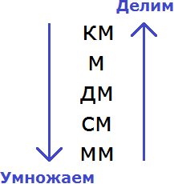
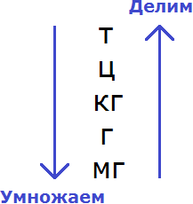
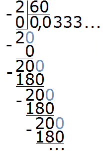
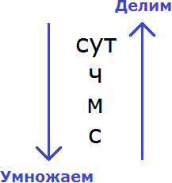
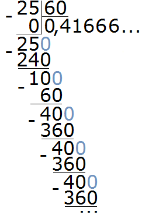

В этом уроке мы научимся переводить физические величины из одной единицы измерения в другую.
Перевод единиц измерения длины
Из прошлых уроков мы знаем, что основные единицы измерения длины это:
- миллиметры;
- сантиметры;
- дециметры;
- метры;
- километры.
Любая величина, которая характеризует длину, может быть переведена из одной единицы измерения в другую.
Кроме того, при решении задач по физике, обязательно нужно соблюдать требования международной системы СИ. То есть если длина дана не в метрах, а в другой единице измерения, то её обязательно нужно перевести в метры, поскольку метр является единицей измерения длины в системе СИ.
Чтобы переводить длину из одной единицы измерения в другую, нужно знать из чего состоит та или иная единица измерения. То есть нужно знать, что к примеру один сантиметр состоит из десяти миллиметров или один километр состоит из тысячи метров.
Покажем на простом примере, как можно рассуждать при переводе длины из одной единицы измерения в другую. Предположим, что имеется 2 метра и нужно перевести их в сантиметры.
Сначала нужно узнать сколько сантиметров содержится в одном метре. В одном метре содержится сто сантиметров:
1 м = 100 см
Если в 1 метре содержится 100 сантиметров, то сколько сантиметров будет содержаться в двух метрах? Ответ напрашивается сам — 200 см. А эти 200 см получаются, если 2 умножить на 100.
Значит, чтобы перевести 2 метра в сантиметры, нужно 2 умножить на 100
2 × 100 = 200 см
Теперь попробуем перевести те же 2 метра в километры. Сначала надо узнать сколько метров содержится в одном километре. В одном километре содержится тысяча метров:
1 км = 1000 м
Если один километр содержит 1000 метров, то километр который содержит только 2 метра будет намного меньше. Чтобы его получить нужно 2 разделить на 1000
2 : 1000 = 0,002 км
Поначалу бывает трудно запомнить, какое действие применять для перевода единиц — умножение или деление. Поэтому на первых порах удобно пользоваться следующей схемой:

Суть данной схемы заключается в том, что при переходе из старшей единицы измерения в младшую применяется умножение. И наоборот, при переходе из младшей единицы измерения в более старшую применяется деление.
Стрелки, которые направлены вниз и вверх указывают на то, что осуществляется переход из старшей единицы измерения в младшую и переход из младшей единицы измерения в более старшую соответственно. В конце стрелки указывается какую операцию применить: умножение или деление.
Например, переведём 3000 метров в километры, пользуясь данной схемой.
Итак, мы должны перейти из метров в километры. Другими словами, перейти из младшей единицы измерения в более старшую (километр старше метра). Смотрим на схему и видим, что стрелка указывающая переход из младших единиц в более старшие, направлена вверх и в конце стрелки указано, что мы должны применить деление:
Теперь нужно узнать, сколько метров содержится в одном километре. В одном километре содержится 1000 метров. А чтобы узнать, сколько километров составляют 3000 таких метров, нужно 3000 разделить на 1000
3000 : 1000 = 3 км
Значит, при переводе 3000 метров в километры, получим 3 километра.
Попробуем перевести те же 3000 метров в дециметры. Здесь мы должны перейти из старших единиц в младшие (дециметр младше метра). Смотрим на схему и видим, что стрелка указывающая переход из старших единиц в младшие, направлена вниз и в конце стрелки указано, что мы должны применить умножение:
Теперь нужно узнать, сколько дециметров в одном метре. В одном метре 10 дециметров.
1 м = 10 дм
А чтобы узнать сколько таких дециметров в трёх тысячах метрах, нужно 3000 умножить на 10
3000 × 10 = 30 000 дм
Значит при переводе 3000 метров в дециметры, получим 30000 дециметров.
Перевод единиц измерения массы
Из прошлых уроков мы знаем, что основные единицы измерения массы это:
- миллиграммы;
- граммы;
- килограммы;
- центнеры;
- тонны.
Любая величина, которая характеризует массу, может быть переведена из одной единицы измерения в другую.
Кроме того, при решении задач по физике, обязательно нужно соблюдать требования международной системы СИ. То есть если масса дана не в килограммах, а в другой единице измерения, то её обязательно нужно перевести в килограммы, поскольку килограмм является единицей измерения массы в системе СИ.
Чтобы переводить массу из одной единицы измерения в другую, нужно знать из чего состоит та или иная единица измерения. То есть нужно знать, что к примеру один килограмм состоит из тысячи граммов или один центнер состоит из ста килограммов.
Покажем на простом примере, как можно рассуждать при переводе массы из одной единицы измерения в другую. Предположим, что имеется 3 килограмма и нужно перевести их в граммы.
Сначала нужно узнать сколько граммов содержится в одном килограмме. В одном килограмме содержится тысяча граммов:
1 кг = 1000 г
Если в 1 килограмме 1000 граммов, то сколько граммов будут содержаться в трёх таких килограммах? Ответ напрашивается сам — 3000 граммов. А эти 3000 граммов получаются путем умножения 3 на 1000. Значит, чтобы перевести 3 килограмма в граммы, нужно 3 умножить на 1000
3 × 1000 = 3000 г
Теперь попробуем перевести те же 3 килограмма в тонны. Сначала нужно узнать сколько килограммов содержатся в одной тонне. В одной тонне содержится тысяча килограмм:
1 т = 1000 кг
Если одна тонна содержит 1000 килограмм, то тонна которая содержит только 3 килограмма будет намного меньше. Чтобы её получить нужно 3 разделить на 1000
3 : 1000 = 0,003 т
Как и в случае с переводом единиц измерения длины, на первых порах удобно пользоваться следующей схемой:

Данная схема позволит быстро сориентироваться какое действие выполнить для перевода единиц — умножение или деление.
Например, переведём 5000 килограмм в тонны, пользуясь данной схемой.
Итак, мы должны перейти из килограммов в тонны. Другими словами, перейти из младшей единицы измерения в более старшую (тонна старше килограмма). Смотрим на схему и видим, что стрелка указывающая переход из младших единиц в более старшие, направлена вверх и в конце стрелки указано, что мы должны применить деление:
Теперь нужно узнать сколько килограмм содержатся в одной тонне. В одной тонне содержится 1000 килограмм. А чтобы узнать, сколько тонн составляет 5000 килограмм, нужно 5000 разделить на 1000
5000 : 1000 = 5 т
Значит, при переводе 5000 килограмм в тонны, получается 5 тонн.
Попробуем перевести 6 килограммов в граммы. В данном случае мы переходим из старшей единицы измерения в младшую. Поэтому будем применять умножение.
Сначала надо узнать сколько граммов содержится в одном килограмме. В одном килограмме содержится тысяча граммов:
1 кг = 1000 г
Если в 1 килограмме 1000 граммов, то в шести таких килограммах будет в шесть раз больше граммов. Значит 6 нужно умножить на 1000
6 × 1000 = 6000 г
Значит, при переводе 6 килограммов в граммы, получим 6000 грамм.
Перевод единиц измерения времени
Из прошлых уроков мы знаем, что основные единицы измерения времени это:
- секунды;
- минуты;
- часы;
- сутки.
Любая величина, которая характеризует время, может быть переведена из одной единицы измерения в другую.
Кроме того, при решении задач по физике, обязательно нужно соблюдать требования международной системы СИ. То есть если время дано не в секундах, а в другой единице измерения, то его обязательно нужно перевести в секунды, поскольку секунда является единицей измерения времени в системе СИ.
Чтобы переводить время из одной единицы измерения в другую, нужно знать из чего состоит та или иная единица измерения времени. То есть нужно знать, что к примеру один час состоит из шестидесяти минут или одна минута состоит из шестидесяти секунд и т.д.
Покажем на простом примере, как можно рассуждать при переводе времени из одной единицы измерения в другую. Предположим, что требуется перевести 2 минуты в секунды.
Сначала надо узнать сколько секунд содержится в одной минуте. В одной минуте содержатся шестьдесят секунд:
1 мин = 60 с
Если в 1 минуте 60 секунд, то сколько секунд будет в двух таких минутах? Ответ напрашивается сам — 120 секунд. А эти 120 секунд получаются путём умножения 2 на 60. Значит, чтобы перевести 2 минуты в секунды, нужно 2 умножить на 60
2 × 60 = 120 с
Теперь попробуем перевести те же 2 минуты в часы. Поскольку мы переводим минуты в часы, то сначала надо узнать сколько минут содержится в одном часе. В одном часе содержится шестьдесят минут:
1 ч = 60 м
Если один час содержит 60 минут, то час который содержит только 2 минуты будет намного меньше. Чтобы его получить нужно 2 минуты разделить на 60

При делении 2 на 60 получается периодическая дробь 0,0 (3). Эту дробь можно округлить до разряда сотых. Тогда получим ответ 0,03
2 : 60= 0,03 ч
При переводе единиц измерения времени также применима схема, подсказывающая что применять — умножение или деление:

Например, переведём 25 минут в часы, пользуясь данной схемой.
Итак, мы должны перейти из минут в часы. Другими словами, перейти из младшей единицы измерения в более старшую (часы старше минут). Смотрим на схему и видим, что стрелка указывающая переход из младших единиц в более старшие, направлена вверх и в конце стрелки указано, что мы должны применить деление:
Теперь нужно узнать, сколько минут содержится в одном часе. В одном часе содержится 60 минут. А час, который содержит только 25 минут будет намного меньше. Чтобы его найти, нужно 25 разделить на 60

При делении 25 на 60 получается периодическая дробь 0,41 (6). Эту дробь можно округлить до разряда сотых. Тогда получим ответ 0,42
25 : 60 = 0,42 ч